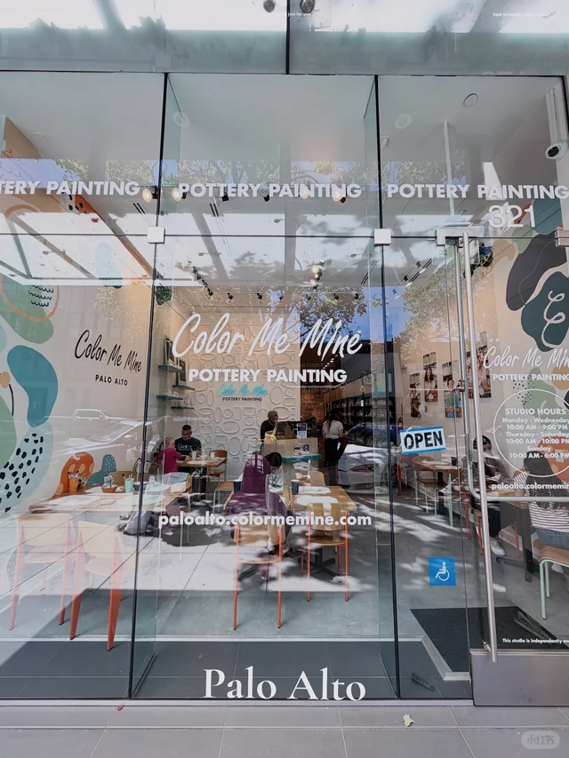
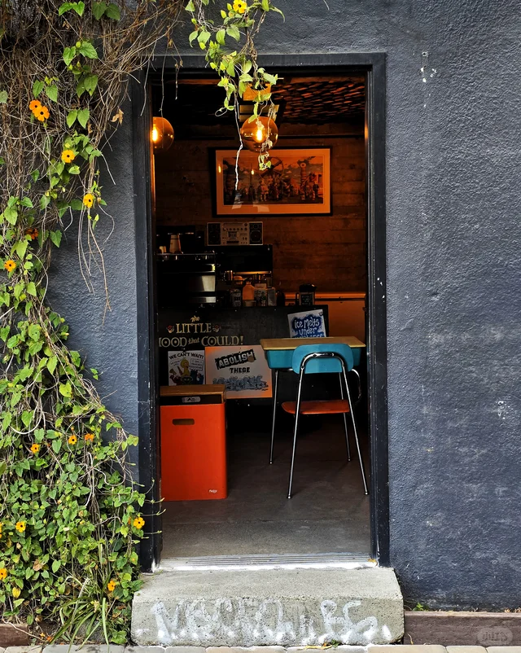

🎉活动与演出

「🍓本周长周末湾区精彩活动5/21-5/25」
Memorial Day长周末来了，这份5/21-5/25活动清单帮你一次搞定周末安排，不用再纠结去哪。

「湾区5/22-5/25长周末活动｜嘉年华+夜市+市」
嘉年华、夜市、市集一网打尽，长周末想找点热闹氛围的朋友别错过。

「旧金山湾区5月活动✨杀糕节x马拉松x免费新展」
Bay to Breakers马拉松、Cake Picnic、免费新展，五月剩下的日子都能安排得满满当当。

「5月湾区活动」
整理了五月免费博物馆日、Yerba Buena花园音乐节等活动日历，省钱又出片。
🎨艺术与文化

「SF Asian Art Museum盐田千春展🌸」
时隔七年盐田千春再来旧金山办展，红线缠绕的装置艺术绝对值得专程一去。

「湾区生活｜SF莫奈画展」
莫奈画展在SF开幕，喜欢印象派的朋友周末可以安排一场艺术约会。

「湾区｜SF Decorator Showcase 年度展又来了」
家居人每年最期待的Decorator Showcase开幕，看顶级设计师如何把老豪宅改造一新。

「不可错过的好展，坐标旧金山湾区」
博主精选近期不容错过的展览清单，看展爱好者直接收藏。
🍜美食探店

「湾区｜开车一小时也要去吃的贵州烧椒鸡！好吃」
博主说开一小时车也要去吃，对喜欢辣口的朋友来说这就是最高评价了。

「七访｜湾区最适合孕期解馋的米其林三星」
能让人去七次的米其林三星，菜单一定耐打，想体验fine dining的可以参考。

「做饭博主今年在湾区吃到的好店合集🔢」
做饭博主对食物挑剔得多，她推荐的店踩雷概率会低很多，建议收藏。

「在湾区吃了八次的宝藏餐厅🥰」
能让人复购八次的餐厅在湾区不多见，回头客的认证最实在。
🌲户外自然

「湾区限定｜Mulberry U Pick」
桑葚季节限定！自己动手采摘的乐趣，亲子或情侣出游都很合适。

「湾区周边 冷门Getaway 8个Day Trip打卡地」
8个冷门day trip打卡地，避开人群享受Mill Valley红杉林这种隐藏宝藏。

「🌲湾区周末逃离计划 📍Dawn Ranch」
想要逃离城市喧嚣？Dawn Ranch是周末小度假的好选择，森林感拉满。

「湾区桃花源记——Djerassi艺术徒步」
在山林间徒步还能看到艺术装置，Djerassi把户外和艺术结合得很巧妙。

「旧金山 Land's End 陆地尽头」
Land's End的海岸线徒步永远值得推荐，金门桥视角加海雾氛围拉满。
💎宝藏地点

「湾区茶室，适合找个雨后点一壶茶，读一本书」
湾区难得的安静茶室，适合一个人发呆或者好友小聚，慢节奏生活的理想去处。

「湾区半岛INFP的精神充电站」
INFP的精神充电站清单，适合内向星人寻找属于自己的安静角落。

「旧金山我最爱的4个地方｜Citywalk出片必备」
想Citywalk又想出片？这4个地方本地人推荐，构图色彩都到位。

「旧金山城市攻略｜每个生活在这里的人都爱它」
生活在这里的人写的城市攻略，比游客指南更接地气，值得参考。